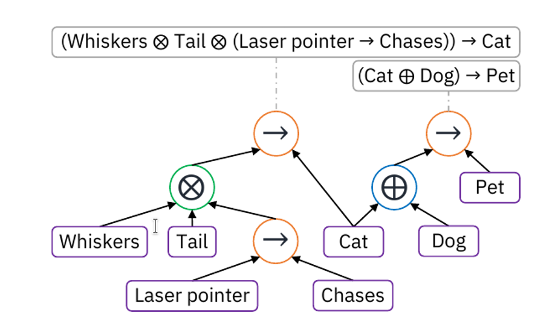

harsha kokel
Logical Neural Network
Ryan Riegel, et al. (arxiv 2020) proposes to build Neural Network by adding one neuron for each logical gate and literal in a logic formulae and hence building a neural framework for logical inference. This article reviews their work. It was written jointly with Siwen Yan, as part of the course on NeuroSymbolic systems by Prof. Sriraam Natarajan.
Ryan Riegel, et al. (arxiv 2020) proposes Logical Neural Network (LNN), a neural framework to perform logical inference. They propose to build a neural network with 1-to-1 correspondence with logical formulae. So, every neuron in the LNN is either a logical literal or logical gate. Given set of logical formulae, a LNN is a graph with one neuron for every unique proposition occurring in any formula and one neuron for each logical operation occurring in each formula, as shown in the figure below. Each neuron outputs a lower and upper bound on the truth values of the corresponding sub-formulae or proposition. A logical neural accepts the output of their corresponding neurons and propositional neurons accepts the bound on propositions' truth value.

src: Ryan Riegel, et al. (arxiv 2020)
For purpose of demonstrating the contributions authors use proposition formulae in the paper and extend it to FOL in the appendix. Hence, the class presentation focused on propositional formulae only. It is long known that a neuron can be treated as logical gate and hence a neural network can approximate any boolean formula. Authors claim that although this fact is known, it has not been explored much. For example, KBANN1 uses the symbolic knowledge to create an initial neural network but then the parameters of the neural network are learned from examples, so the notion of neuron being the logical gate is lost. Literature from differential ILP like Tensor Log2, which also uses symbolic knowledge/clauses to build the structure of neural network, do not use neurons as logical gates. Perhaps one exception is the CIL2P3 work of Garcez.
Since the truth values can be any value between [0,1], the choice of activation function for the logical operators must implement real-valued logic. There can be multiple ways of achieving that using importance weighting, this paper proposes weighted nonlinear logic using Ñukasiewicz-like logic. Other types of real-valued logic functions can be used and the framework is able to accommodate that. The activation function defined using the weighted generalization of the Ñukasiewicz logic still follows the logic properties and the DeMorgan’s laws. Augmenting NN with FOL paper4 also uses Łukasiewicz logic as activation function in the augmented network. The difference is that paper does not consider real-valued logic and hence does not have upper or lower bounds. It also does not use weighted generalization. This weighted generalization of logic is the main contribution of the paper.
Inference is performed using the iterative upward and downward pass of the network and learning is strictly restricted to the parameter learning since the structure is built using formulae. Hence the LNN model retains the interpretability of the original logical formulae in the network.
LNN is empirically evaluated on 3 benchmark datasets: Smokers and friends, Lehigh University Benchmark (LUBM), and Thousands of Problems for Theorem Proving (TPTP). These experiments show that the LNN performs comparative to the LTNs (Logic Tensor Networks) and better than MLNs (Markov Logic Networks). LNN is better able to handle the contradictions and is the only neural model that was able to solve any common sense reasoning problem of TPTP. This clearly demonstrates the power of LNN as neural theorem prover.
The use of many-valued logic in AI or ML has been scarce. It has mainly been used in the philosophical studies and its usefulness in the field of AI is unexplored, except for the use in fuzzy logic. Perhaps this paper opens door for use of many valued logic in neuro-symbolic studies.
Strengths
- The differentiable way of using weighted nonlinear logic for activation function has huge potential.
- First neural theorem prover which doesn’t need vector embeddings
- The learnt model remains interpretable since representation is disentangled from neural parameters, as against Neural Theorem Prover5.
- The compositionality or modularity of the network structure can potentially enable transfer
- Opens door for use of many-valued logic in neural setting.
- It enables the open-world assumption by probabilistic bounds, yielding resilience to incomplete knowledge
Drawbacks
- Needs handcrafting of all the rules upfront, no structure learning
- Does not support equality and functions
- Still needs grounding
- LNN should be compared with Neural Theorem Prover5, since they both are theorem provers.
- Paper is dense and difficult to read
Potential improvements
- Enhance LNN with structure learning ability (rule induction)
References
- ^G. G. Towell and J. W. Shavlik. Knowledge-based artificial neural networks. Artificial intelligence 1994.
- ^W. W. Cohen. Tensorlog: A differentiable deductive database, 2016.
- ^A. S. d. Garcez and G. Zaverucha. The connectionist inductive learning and logic programming system, Applied Intelligence 1999.
- ^Tao Li, Vivek Srikumar, Augmenting Neural Networks with First-order Logic, ACL 2019
- ^Tim Rocktäschel and Sebastian Riedel. End-to-end differentiable proving, NeurIPS, 2017.
Previous post
Augmenting Neural Networks with First-order Logic
Next post
Automatically Generating Abstractions for Planning